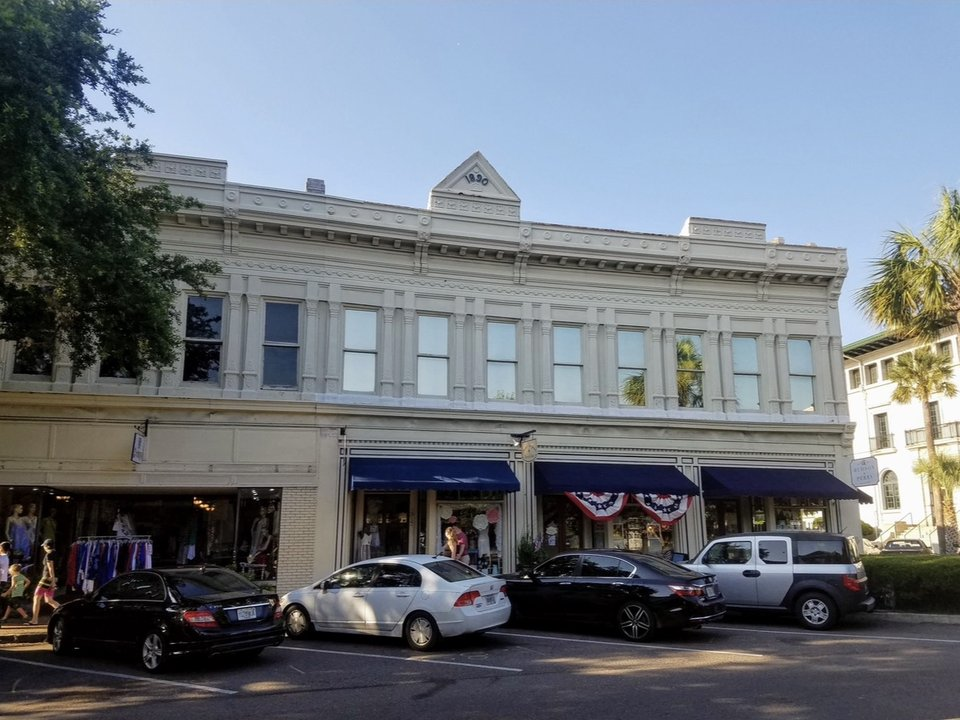

Oceanfront · Splurge
The Ritz-Carlton, Amelia Island
A polished oceanfront resort with a spa, golf and its seafood restaurant, Coast. The most indulgent choice.
Official details for The Ritz-Carlton, Amelia IslandLand in town. Walk to dinner.
Fernandina Beach’s Victorian seaport is minutes from the runway: brick storefronts on Centre Street, shrimp boats at sunset, and wide, quiet beaches lined with dunes. Add a resort spa and it is an easy romantic weekend.

In our plane it’s a short flight.
Where we’re staying Dinner Things to do The plan
I’ll handle the flight planning; you handle the fun planning!
Time illustration: direct distance at 150 KTAS plus 15 minutes for departure and arrival, matching the discovery page. Use ForeFlight for your actual flight plan.
Check the weekend weather at both ends → Flight category, your minimums and the crosswind on the best runway.
More in Aviation & getting around below. Crew cars change often: call the FBO before you go. How to have a rental car waiting at the FBO · Know something we missed? Tell us.
KFHB, Fernandina Beach Municipal, is a non-towered field just south of downtown, a few minutes from Centre Street.
680 Airport Road, Fernandina Beach, FL 32034
Bent Wing lists full-service and self-serve 100LL, Jet A and a crew car. Pilots report a small crew-car fee that may be waived with fuel; ask about the current policy, facility fees and two-night parking. No live fuel price is shown.
Rental cars generally come from Jacksonville International (JAX); confirm delivery in advance rather than counting on it. Jacksonville’s airspace lies to the south; review the sectional.
A grand oceanfront resort, a big resort with everything, or a beach inn near town. Rates and availability need travel dates.
A polished oceanfront resort with a spa, golf and its seafood restaurant, Coast. The most indulgent choice.
Official details for The Ritz-Carlton, Amelia IslandA large oceanfront resort with a spa, golf and more than ten restaurants. Easy if you want everything on site.
Official details for Omni Amelia Island Resort & SpaA shingle-style inn right on the beach, a short ride from downtown. Quiet and romantic. Confirm room type and dining.
Official details for Elizabeth Pointe LodgeThe Ritz-Carlton’s club level adds a private lounge with food and drinks throughout the day, on top of the oceanfront setting and spa.
Official details for Club level at The Ritz-CarltonOmni Amelia Island’s villas and suites give you room to spread out, with the resort’s spa, golf and restaurants close by.
Official details for Omni oceanfront villasPrices and availability for your dates, through our partner Stay22. This is an affiliate link: we may earn a commission at no cost to you. The picks above are never paid.
Downtown Fernandina has excellent small restaurants. Reserve weekend dinners.
Often called the island’s finest dining, at 802 Ash Street downtown, with a cocktail lounge that sometimes has live music.
Official details for David’s Restaurant & LoungeSpanish and Portuguese dishes at 22 South 4th Street, a short walk from Centre Street. Reservations suggested on weekends.
Official details for España Restaurant & TapasA small, much-praised restaurant at 20 South 5th Street. Swap it in for either night.
Official details for BurlingameEasy, low-key pleasures. Choose one outing a day and leave room for the beach.
Victorian storefronts, galleries and shops running down to the harbor. Have a drink at the Palace Saloon, said to be Florida’s oldest continuously operating bar.
A 19th-century brick fort at the north end of the island, with beaches, trails and live oaks.
Guided beach rides are a memorable couples outing. Book ahead and check age, weight and season rules.
Book a beach rideWatch the shrimp boats come in from the downtown harbor, or take a sunset river cruise.
The Ritz-Carlton and Omni resorts both have full-service spas, a short drive from downtown.
Booking: Ask about couples treatments, access for non-resort guests, current pricing and cancellation policy. No prices are shown here, and no appointment has been booked.
Ritz-Carlton spa · Omni spaThis prototype links to the destination calendar. It does not yet match events to your travel dates.
One of the country’s best-known classic-car shows. Spectacular, and the island fills up; book far ahead.
Fernandina’s big downtown festival celebrating its shrimping history. Fun and crowded.
Mild weather and quieter beaches. Summer is hot and humid, with afternoon storms; hurricane season runs June–November.
Check the destination calendar when choosing a weekend, and confirm dates and tickets with the organizer.
A sample Friday–Sunday weekend: the seaport, a beach day and two downtown dinners. No bookings or availability confirmed.
Land at KFHB mid-morning and borrow the crew car.
Lunch downtown and a stroll up Centre Street to the harbor.
Fort Clinch and a walk on the beach, then back to the FBO.
Land at KFHB, subject to weather and your actual flight plan, and head downtown.
Lunch and a slow walk up Centre Street; a drink at the Palace Saloon.
Sunset at the harbor, then dinner at David’s.
Fort Clinch State Park, or a horseback ride on the beach.
Beach time, or a couples spa treatment at one of the resorts.
Dinner at España.
Breakfast and a last walk through the historic district.
Return the crew car and allow time at the FBO.
Plan around afternoon storms in warm months.
A guided horseback ride on the beach.
A long spa afternoon at one of the oceanfront resorts.
A sunset river cruise, then dinner at Burlingame.
This guide is part of a multi-stop flying trip. Set your dates and aircraft, then swap stops to make it your own.
These details make the difference between an appealing list and a usable getaway.
Lodging and ground transport first, then dinners and any spa time.
The Concours in March and the Shrimp Festival fill the island. Check dates before booking.
Summer storms build in the afternoon; hurricane season runs June–November.
Rates and restaurant hours are date-dependent. No availability or live price is implied here.
Picks and links reviewed by WingAway Weekends. Hours, prices, menus and availability change often, so confirm directly with each place before booking. Spotted something out of date, or have a favorite we missed? Email us at hello@wingawayweekends.com.
WingAway Weekends helps you discover the destination. Use ForeFlight and current official aviation information for route, performance, weather, NOTAMs and preflight decisions. Flight planning and PIC responsibility stay with the pilot.